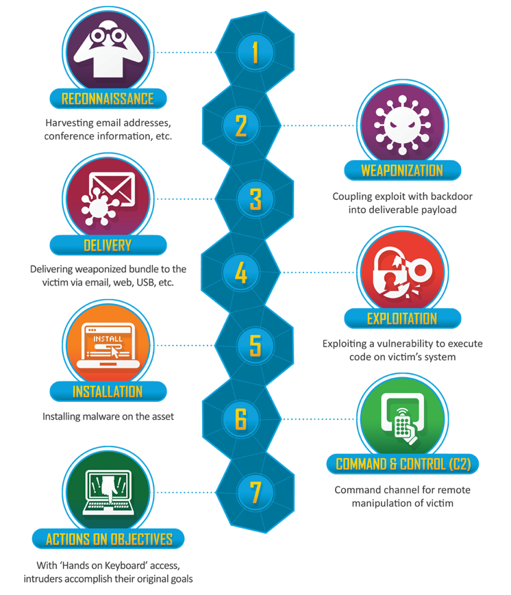
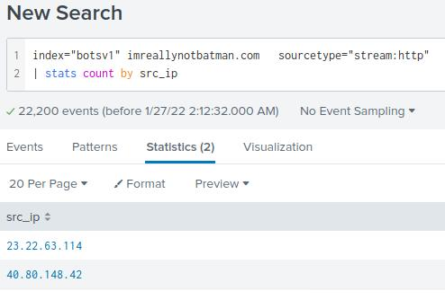
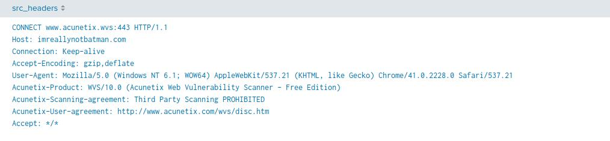
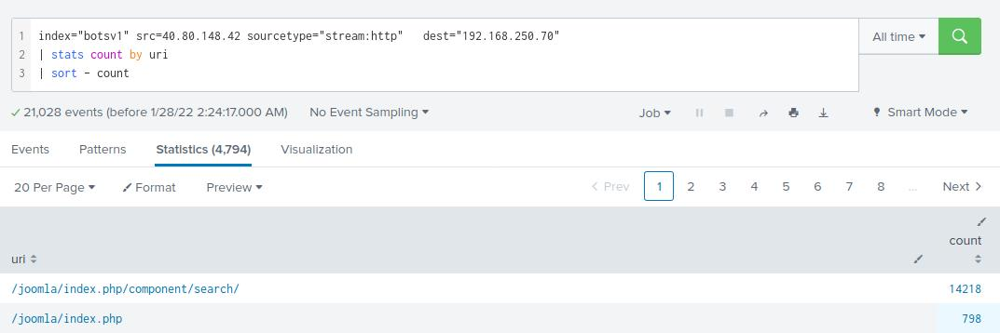
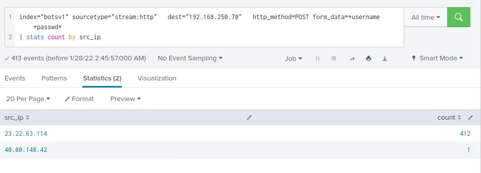
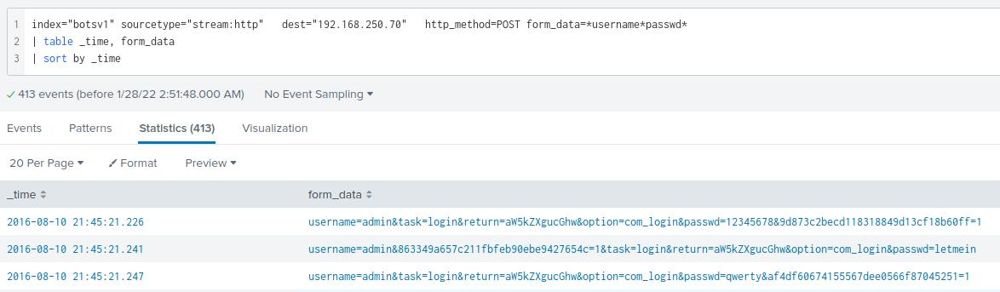
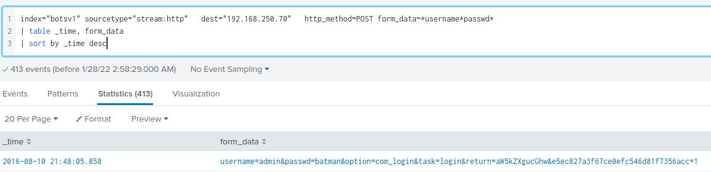
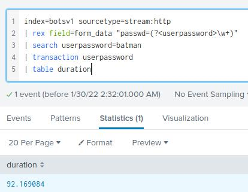
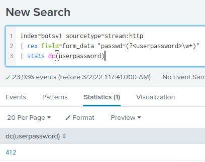
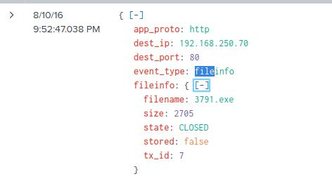

Security Operations and Incident Response
Often referred to as the “blue team”, the SOC is responsible for defending our systems and our networks. They will proactively monitor activity, triage alerts against published threat reports, and will provide incident response in the case of a breach. Using Splunk, I will investigate a scenario where attackers have gained access to our web server and defaced our website. I will find out who the attacker was and explore ways to prevent further attacks.
-
Reconnaissance
What IP is scanning our web server?
 Following the questions listed out on the THY room, my first task was to find the IP address that was scanning our web server. After running
index="botsv1" imreallynotbatman sourcetype="stream:http" | stats count by src_ipI was able to list IP addresses that had scanned our web server and figure out which of these adresses had more traffic to our server. Once we have narrowed our search down tosteam:httpwe can see what source of IP addresses have interacted with our website. We can see two IP addresses and one of them is associated with 95% of the traffic. From this we can assume that40.80.148.42is the IP address that is scanning our web server for potential vulnerabilities.What web scanner scanned the server?
 Looking at the
src_headersI found out what web scanner they've used to scan our server which was Acunetix.What content management system is imreallynotbatman.com using
 Since we now know the source and destination, I now want to learn what content management system they are using. Running
index="botsv1" src=40.80.148.42 sourcetype="stream:http" dest="192.168.250.70" | stats count by uri | sort - countI found out that they were using Joomla. -
Exploitation
What address is performing the brute-forcing attack against our website?
 Running
index="botsv1" src=40.80.148.42 sourcetype="stream:http" dest="192.168.250.70" | stats count by src_ipI found out what address was performing the brute-force attack against our website. We can deduce by the number of attempts made by 23.22.63.114 that this is the IP address responsible for the attacks.What was the first password attempted in the attack?
 In order to find the first attempted password I had to sort the data by time, running
index="botsv1" sourcetype="stream:http" dest="192.168.250.70" http_method=POST form_data=*username*passwd* | table _time, form_data | sort by _time. We can see that the first attempted password is 12345678.What was the correct password for admin access to the content management system running imreallynotbatman.com?
 There are couple of ways to find the correct password that the brute-force attack found. We know that brute-force tools like hydra re-enter the correct password twice in order to verify that it works. I could've written a query that finds the password that was attempted twice, however, I chose a different option. Logic dictates that the correct password would also be the final attempted password. Therefore, running the previous command in descending order,
sort by _time desc, would list the last and the correct password which is batman.How many seconds elapsed between the time the brute force password scan identified the correct password and the compromised login & How many unique password were attempted in the brute force attempt?
 We now need to understand how long it took for the brute-force attack to find the correct password and when did the attacker gain entry into our system. The time we find out will also be a good indication of how strong the password was and we could use this in a report to demonstrate that weaker passwords are easily penetrated.
We know that the password is "batman". Based on this, we can look for login events that have used this password. We can visualise this by using_timeandsrc. Then usingtransactioncommand, can calculate the difference between these times using the duration field. We can see that it has taken 92.17 seconds.
 Another useful information that can help us determine how secure the password is by looking at how many passwords were attempted by the brute force to find the correct one. In this case its 412. -
Installation
What is the name of the executable uploaded by P01s0n1vy?
 A clue in the question indicates that the name of the file was an executable. We could take that literally and search for .exe if we want. If we look at the data sources we have, Suricata can be an appealing place to start because it generates events based on rules pertaining to files it sees. Suricata is an intrusion detection system.
Usingsourcetype=suricataand.exeparameters,index=botsv1 sourcetype=suricata dest_ip=192.168.250.70 .exewe can see the name of the executable which is 3791.exe.